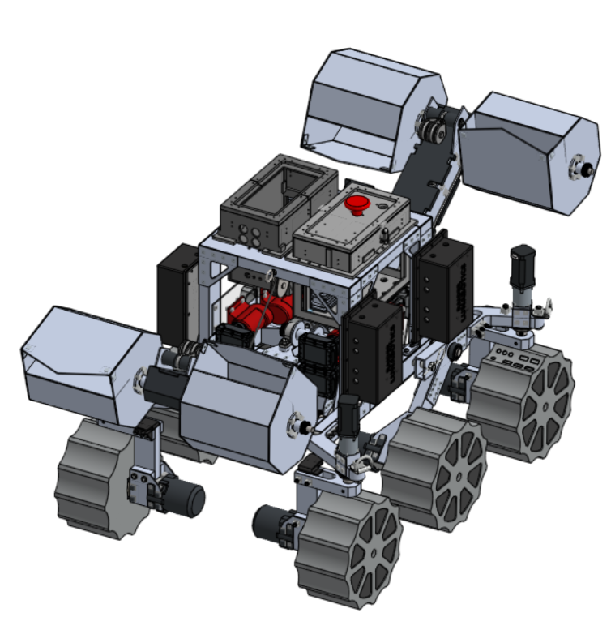
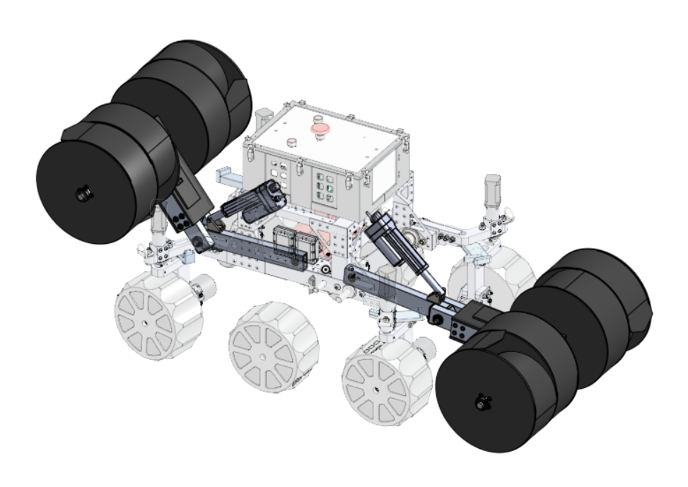
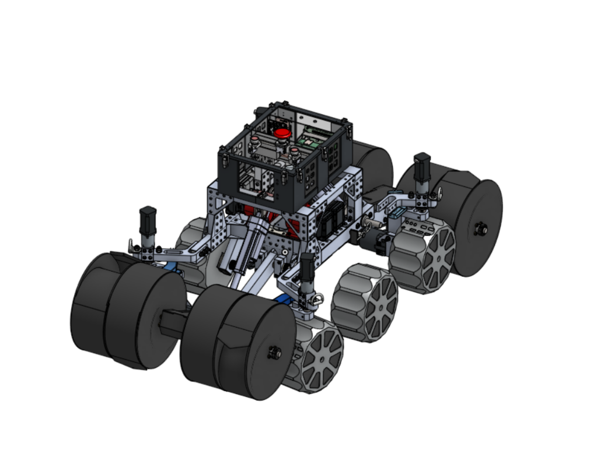
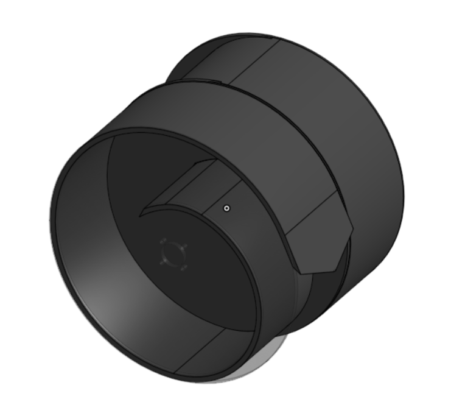
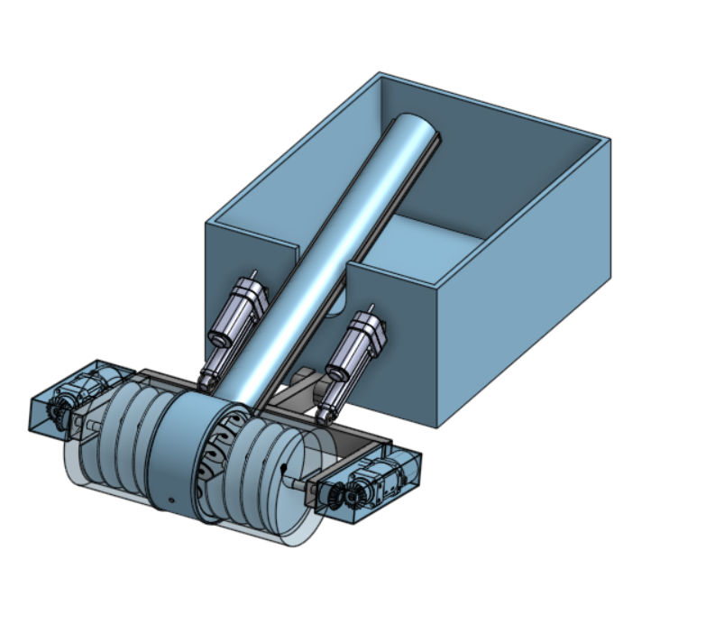

Lunabotics
NASA's Lunabotics Challenge is a competition where university teams build a rover that drives across simulated lunar terrain, digs regolith, and hauls it to a collection point. I am Excavation Lead and Secretary for MSOE's team.

- Project
- NASA Lunabotics rover, excavation system
- Role
- Excavation lead and secretary
- School
- Milwaukee School of Engineering, class of 2029
- Result
- 130% more total regolith capacity
Overview
During my time in the Lunabotics competition, I have had the pleasure of being both Secretary and Excavation Lead for my team.
Secretary
My position as secretary is mostly focused on the HR aspects of a larger engineering team. This primarily includes ensuring everyone feels comfortable and safe within the team, along with designing fun activities and managing communication and collaboration. It also entails ensuring that the PM's systems engineering goals are understood by the subsystem leads and reached on time. I also work with the university and outside sponsors on funding and component donations.
This experience has been incredibly important in teaching me what it means to work in larger engineering teams and, more importantly, how to develop a detailed project effectively across various perspectives and personalities.
Excavation lead
My position as excavation lead is much more focused on real engineering R&D. Here, I lead a team of between 5 and 10 engineers toward the goal of making a full-scale lunar regolith dig system from start to finish. This is where the intersection between my positions becomes clear: depending on the capacity I am working in, I can sometimes become my own boss!
Regardless of semantics, this position has been the single most informative and important venture for my academic growth in engineering so far. From it I have learned how to work within a systems engineering framework, limit my own bias during development, lead a team of engineers toward a specified goal, act with creativity and realistic expectations at the same time, and gain a list of very important and sometimes painfully rare technical skills that I would not have learned until much later in my academic career, if at all. I describe these in more detail in the personal section of this portfolio.
How my team and I designed it
- Researched excavation mechanisms used in extraterrestrial applications before choosing a direction.
- Modeled designs in Onshape and SolidWorks, and ran FEA on structural parts.
- Used discrete element modeling (DEM) to study how the dig system moves granular material.
- Built test stands and tested multiple physical designs in our regolith simulant pit, then kept the best performer.
- Competed with the rover in NASA's international competition against other collegiate teams.
Systems I have worked on and led
Some examples of the systems I have had the privilege to work on and lead are shown below.
Rover designs



2026 modular drum

Test designs
